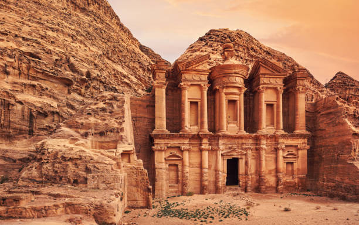
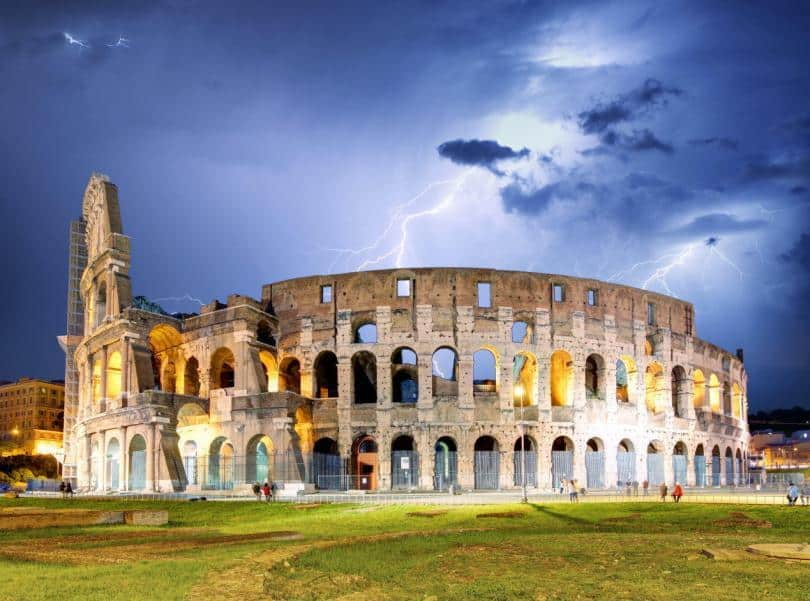

New Seven Wonders Of The World
Visit Britannica!About
In 2000 a Swiss foundation launched a campaign to determine the New Seven Wonders of the World. Given that the original Seven Wonders list was compiled in the 2nd century BCE—and that only one entrant is still standing (the Pyramids of Giza)—it seemed time for an update. And people around the world apparently agreed, as more than 100 million votes were cast on the Internet or by text messaging. The final results were announced in 2007.
The List
- Great Wall Of China
- Chichen Itza
- Petra
- Machu Picchu
- Christ The Redeemer
- Colosseum
- Taj Mahal


